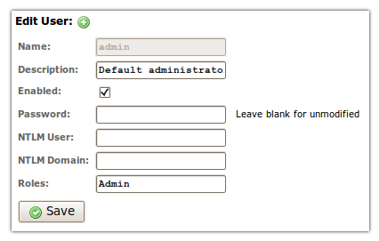

- Documentation
- Users & Security
3. Security, Users & Permissions
Security Notice
- Read Security Notices — This chapter contains
a number of security notices. They are provided for your protection.
Read them.
- Understand Implications — The security
implications of installing RapidContext must be properly understood.
Especially for a production environment or for a server reachable
from an external network (Internet).
- Follow Advice & Precautions — Take care
to follow the advice or best practices outlined in this chapter.
Please revisit this chapter after installation in order to
double-check on the issues outlined here.
3.1. Default Users & Roles
The default installation of RapidContext contains the following users and
roles:
- admin (user) — Created if no other
users are detected on server startup. The password is initially set to
accept any value (an empty string). The user is also assigned the
admin role. It is good practice to either disable this user
or assign it a proper password.
- admin (role) — A built-in role that
provides full access to all objects. This role should not be
modified or removed from the system. Instead, it should be
assigned to users with care. In most installations, it should be the
only role with access to modify procedures, manage plug-ins, and
similar administrative operations.
- anonymous (role) — A built-in role that
provides anonymous (i.e. public) access to system procedures and some
built-in apps. This role is required for the login app to function
properly.
Security Notice
- Modify admin User Password — Either
disable the admin user or assign a strong password.
- Avoid admin Role Access — The
admin role should be avoided, if possible. Create new
roles with more limited access privileges for daily usage.
3.2. User Authentication
RapidContext supports both authenticated and anonymous usage. The following
protocols for user authentication are built-in and supported by default:
- HTTP Digest Auth — Uses a browser built-in login
dialog for user authentication. This method uses a challenge-response
protocol that avoids sending the password over the wire.
- System.Session.Authenticate Procedure —
Uses HTTP POST to call a procedure with an MD5 hash similar to HTTP
digest auth. This method uses a challenge-response scheme that avoids
sending the password over the wire.
- System.Session.AuthenticateToken Procedure
— Uses HTTP POST to call a procedure with an authentication token
that contains both user id and a password equivalent. This method is
used for "password recovery" via email or similar.
Security Notice
It is strongly recommended to only use user
authentication over secure channels (intranets, VPN tunnels or HTTPS).
Otherwise the communication is vulnerable to eavesdropping,
man-in-the-middle attacks or replay attacks.
3.3. Sessions & Persistent Cookie Authentication
After a successful authentication, a new session is initiated for the user.
The sessionid HTTP cookie is sent to the web browser and no further
authentication is required until the cookie expires or is invalidated. This
avoids repeated authentication requests.
Session cookies are not created when accessing the storage web service, but
are used if already set. Instead, the storage web service relies on HTTP
Digest authentication (due to WebDAV compatibility).
Notice
A user session can be invalidated in one of the following ways:
- Session Expiry — Both the sessionid
cookie and the session itself is set to expire after 30 days.
- Logout — Users can logout from the user menu
(top right in the standard user interface).
- Forced Termination — The built-in procedure
System.Session.Terminate allows the early termination of
any user session.
Security Notice
Due to persistent cookie authentication, it is strongly
recommended to always logout from user accounts with highly
privileged access. Also, only secure communication channels (intranets,
VPN tunnels or HTTPS) should be used.
3.4. User Management & Storage
Users are managed with the built-in Admin app. Follow
the steps below in order to edit or create a user:
- Launch or go to the Admin app
- Choose the
Users
tab
- Select the appropriate user OR press the
+
icon
- Edit the user form (see screenshot for admin user)

- Press
Save
to store the changes
Notice
A few notes regarding user data storage:
- Passwords — Passwords are stored with a
one-way MD5 hash (without salt). This makes them almost impossible
to decrypt, but a user with write permission can of course reset
any user password as needed.
- User Removal – Users can be removed by
deleting the corresponding file from storage, but this is
strongly discouraged. Use the
Enabled
checkbox in the dialog above instead.
- Storage Location – The user objects can be
found in the local plug-in, with each user stored as
user/[identifier]. See the security notice below regarding
the correct permissions for this path.
Security Notice
- Protect Password Hashes — Although the
actual password cannot be retrieved from a password hash, it is still
possible to login using only a user name and a password hash. This is
due to the workings of the HTTP Digest mechanism.
- Disable User read Access — Due to
the unsafe nature of the password hashes, all read access
to the /user/** storage path should be limited. Naturally,
write access must also be limited.
3.5. Roles & Access Control
All access control is assigned via roles. Each role provides an access
control list, detailing a list of storage paths and the corresponding
permissions. The permission names and their meanings are the following:
- none — Provides no access at all. This is used to block
access to a subpath, as this permission also stops further searching down
the access control list when matched.
- internal — Provides indirect read access to an object.
This is used to allow access to connections, procedures and similar when
used by another object (i.e. a procedure).
- read — Provides read (and execute) access to an object.
This also allows introspection into the object properties, source code
and similar. Implies internal access as well.
- search — Provides object listing and search permission.
Note that only objects with read permission are returned in
search results, regardless of this permission.
- write — Provides write (and delete) access to an object.
This is used when modifications to data or similar must be allowed. Note
that this does not imply either read or
search access to the same objects.
- all — Provides all permissions. This can be used as a
shorthand way to provide read, search and
write permission to objects, but it also provides any custom
permission requested.
- ... — Any other permission name is considered a custom
permission. No automatic access control is performed for such permissions,
but they can be checked programmatically.
Multiple roles may be assigned to each user, providing the user will the
union of the role permissions. Roles can also be automatically assigned to
users via the auto property:
- auto = all — Assigns the role to all users, including
anonymous, non-authenticated users. This is used to add permissions
for anonymous access.
- auto = auth — Assigns the role to all authenticated
users, regardless of their other roles. This is used to add permissions
to logged in users.
Security Notice
The read permission should not be provided for user
objects. Doing so allows other users to read the password hash
or to create new authentication tokens. Both would allow login access for
the user in question.
3.6. Role Management & Storage
Roles are currently created and modified without any admin tools. The role
objects can be found in storage as role/[identifier]. See below for
an example role properties file:
id = demo
type = role
name = Demo
description = Provides access to the demo app and procedures.
access.0.path = app/demo
access.0.permission = read
access.1.path = procedure/Demo.**
access.1.permission = read
The configuration for the access array (the access control list)
supports the following properties:
- access.#.path — The storage path for the object. May
contain wildcard ?, * or ** characters
to match multiple objects. Only ** will match
/
characters (i.e. storage path separators). All path names are
case-sensitive.
- access.#.regexp — The storage path for the object, as
defined by a regular expression. This is used as an alternative to
path when more complex matching is necessary. Note that
regular expression syntax is tricky and requires proper escaping of
literal
.
characters (among others).
- access.#.permission — The access permissions to match
(see list above). May contain several permissions, separated by
,
or
.
Permissions can be checked on all object access via the built-in procedures
or web services. Additional permissions can be checked programmatically via the
System.User.Access procedure.
Security Notice
- Disable Role write Access — Since
the role objects contain the access control lists, any user with
write access to any role object can open the system for full
access. Access to role/** should be very limited.
3.7. Security Checklist
Before installing a RapidContext server in production environment or on a
server reachable from an external network (Internet), please check the
following:
- Disable admin User – Make sure that the
admin user is either disabled or provided with a strong
password.
- Use Strong Passwords – Users should be encouraged
to use strong passwords in order to avoid risks with brute-force attacks
or password guessing.
- Encrypt Connections – All external communications
be encrypted, since information can otherwise be eavesdropped. Use an
HTTPS reverse proxy, an HTTPS servlet container, a VPN tunnel or
similar.
- Verify Access Controls – Test the access controls
for each role with a test user (having only that role). Verify that all
privileged resources are unavailable for any unprivileged role.
- Limit admin Role Access – The number of
users with the admin role should be limited, to avoid
potential abuse of the system. Create more limited roles for daily
usage.